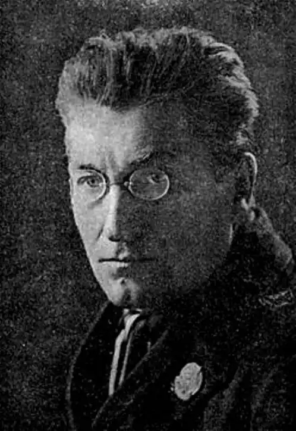
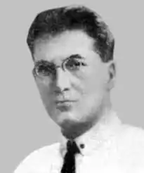

Володимир Антонович Ґадзінський (псевдоніми — Йосиф Гріх, Оскар Редінг, Триліський, Стефан Трипільський; 1888-1932) — український поет, прозаїк, критик, публіцист, літературознавець, журналіст, перекладач.
Один із зачинателів "наукової" поезії в Україні. Член "Гарту", ВУСППу.
Народився 21 серпня 1888 року в Кракові (на той час — Австро-Угорщина) в єврейській родині. Коли майбутньому письменнику виповнилося п'ять років, сім'я переїхала до м. Станіславова (нині — Івано-Франківськ) у Східній Галичині. Там Ґадзінський закінчив реальну польську школу (1906) і вступив до Львівської вищої політехнічної школи (1907–1909). Упродовж 1909-1910 років перебував на військовій службі, далі навчався на фізико-математичному факультеті Віденського університету (1910-1913). Від серпня 1914 року — доброволець УСС, в їх Легіоні воював на Тернопільщині в 1915-1916 роках, потрапив у російський полон. У липні-вересні 1920 року в Тарнополі, працював у "Всегалвидав". У 1920 році перебрався на Наддніпрянську Україну. Належав до літературних організацій Спілки пролетарських письменників "Гарт", "Село і місто", ВУСПП. 1918 року вступив до КП(б)У, брав активну участь у партійному й громадському житті. Редагував журнал "Пролетарська освіта" (1920). Від 1921 року — у Москві, один із засновників літгрупи "Село і місто", автор збірки поем "З дороги" (1922). 1923 року виступав проти формального методу в літературознавстві. Від 1925 року — викладач одеських вищих навчальних закладів, редактор журналу "Блиски" (1928-1929). Автор поем "УСРР", "Айнштайн", "Земля" (всі — 1925), "Заклик Червоного Ренесансу" (1926), "Розум" (1929), поетичних збірок "З дороги" (1922), "Не-абстракти" (1927), фантастичної повісті "Кінець" (1927), збірки статей і рецензій "Фраґменти стихії" (1927). У рукописі залишився роман-трилогія "Звільнення України", а підготовлені до друку "Нотатки з історії української літератури" безслідно зникли. Один із лідерів "Гарту", голова одеської філії Держвидавництва України. Як публіцист виявив себе під час літературної дискусії 1925-1928 (низка статей в журналах, кн. "На безкровнім фронті"). Експериментував із вживанням у високій поезії нових, промислових слів та значень: "бунтоносний чавун", "пегас на тракторі". Пішов із життя 11 серпня 1932 року в Одесі від хвороби серця (за іншими відомостями — від сухот). Існують припущення, що покінчив життя самогубством, оскільки розчарувався в комуністичних ідеалах.